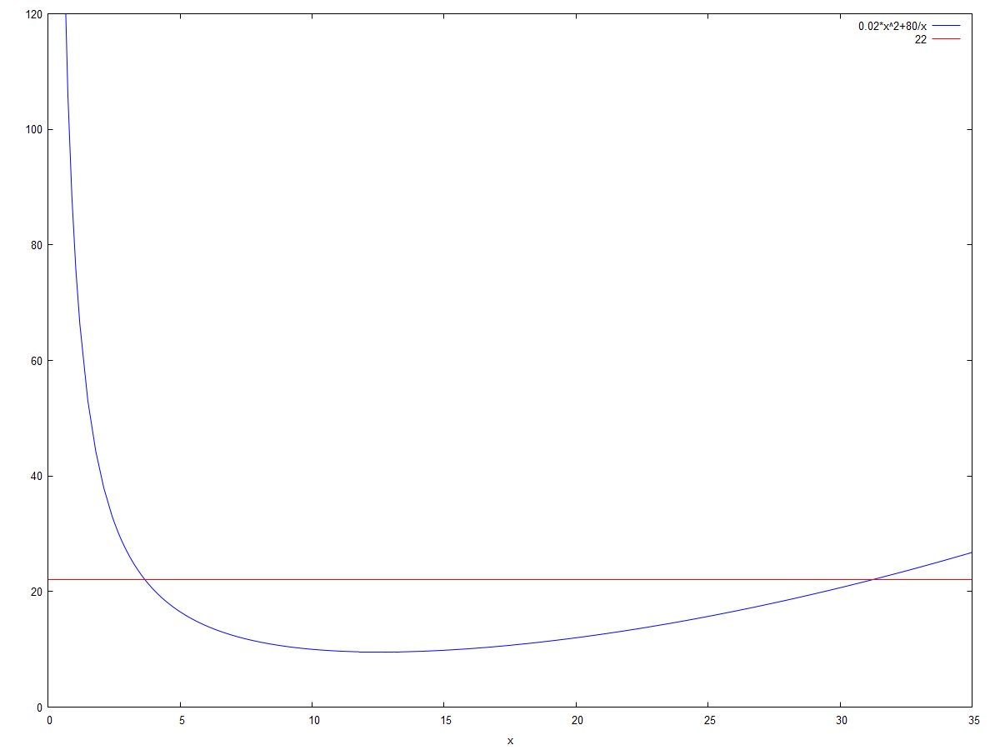

\( \DeclareMathOperator{\abs}{abs} \newcommand{\ensuremath}[1]{\mbox{$#1$}} \)
| (%i7) | C ( x ) : = 0 . 02 · x ^ 2 + ( 80 / x ) ; |
\[\operatorname{ }\operatorname{C}(x)\operatorname{:=}0.02 {{x}^{2}}+\frac{80}{x}\]
| (%i12) | wxplot2d ( [ C ( x ) , 22 ] , [ x , 0 , 35 ] , [ y , 0 , 120 ] ) $ |
\[\]\[plot2d: expression evaluates to non-numeric value somewhere in plotting range.\]
\[\operatorname{ }\]
| (%i18) | c ( x ) : = C ( x ) − 22 ; |
\[\operatorname{ }\operatorname{c}(x)\operatorname{:=}\operatorname{C}(x)-22\]
| (%i20) | find_root ( c ( x ) , x , 0 . 5 , 5 ) ; /*finding the first root between 0.5 and 5*/ |
\[\operatorname{ }3.681733162459649\]
| --> |
| (%i21) | find_root ( c ( x ) , x , 30 , 35 ) ; /*second root |
\[\operatorname{ }31.1717617705136\]
Created with wxMaxima.
The source of this Maxima session can be downloaded here.